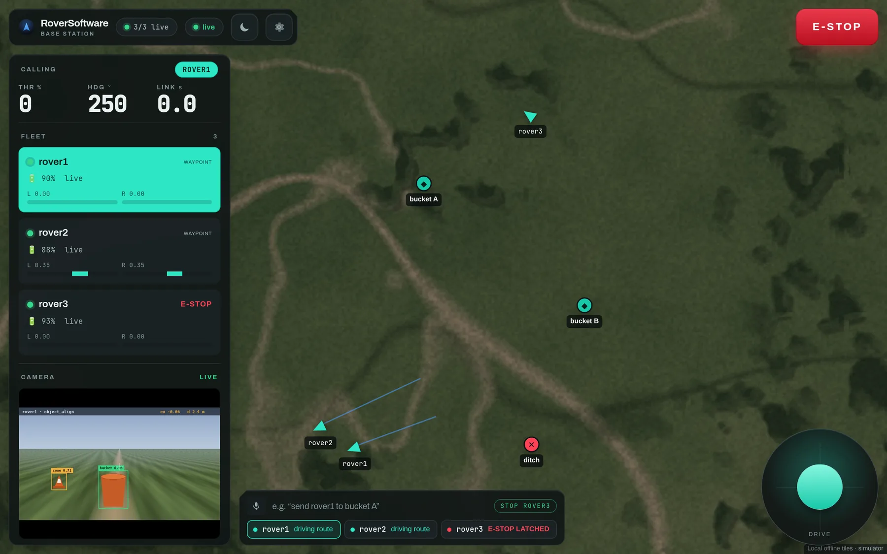
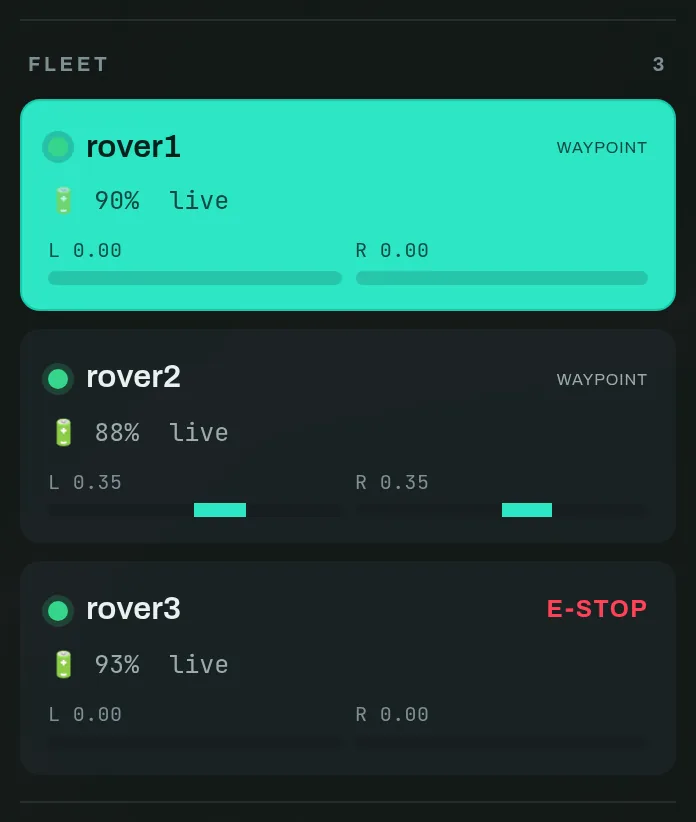
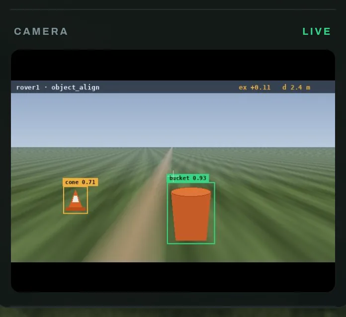
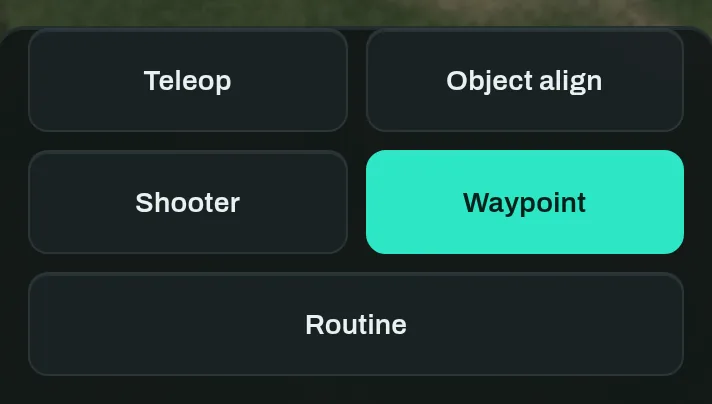
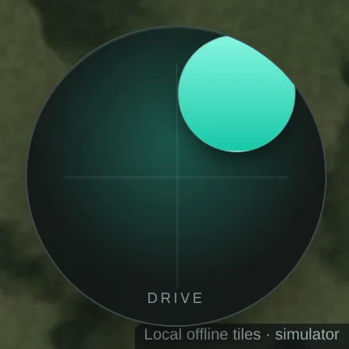
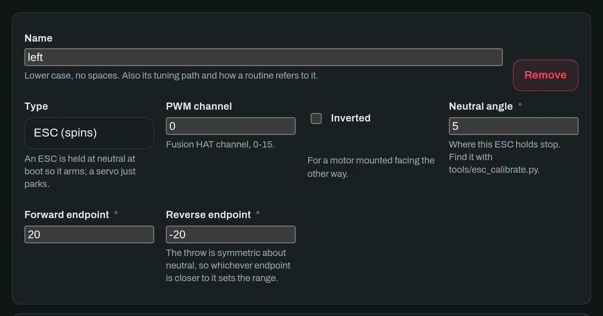
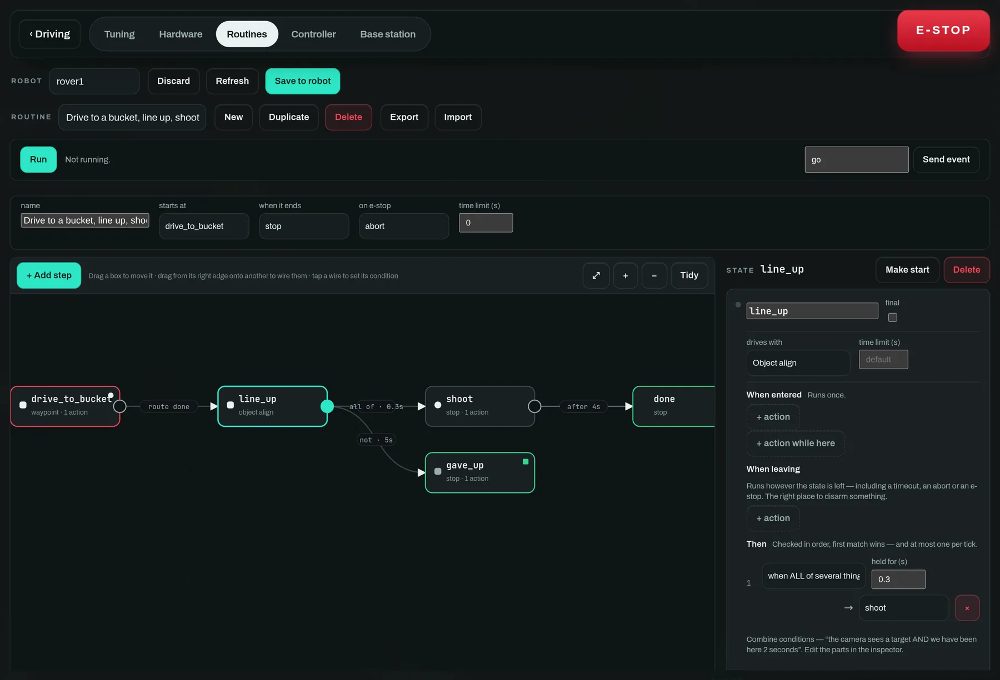
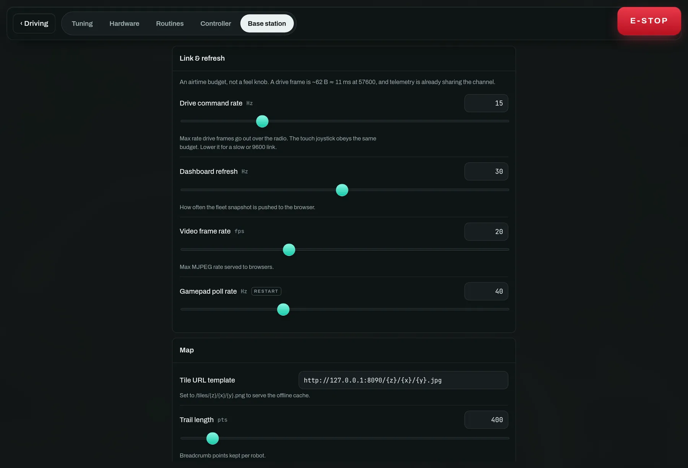

Ground robot · Raspberry Pi · XBee · one base station
Describe the robot.
Draw what it does.
Then drive it.
RoverSoftware is a modular Python stack for a ground robot and the touch base station that commands a fleet of them. The build is declared from the dashboard rather than compiled in, the behaviour is a state machine you draw, and all of it runs against a simulator before you connect a single wire.

--sim.
- Runs without hardware
- Yes —
--sim - Radio link
- XBee, JSON lines
- Drive command
- One type, fleet-wide
- Programming
- No Python required
- Works offline
- Tiles, speech, model
The shape of the system
Two programs. The robot runs on a Raspberry Pi with a SunFounder Fusion HAT and owns everything that moves. The base station runs on your laptop or a second Pi, owns the radio, the gamepad and the map, and serves the touch dashboard. They talk in newline-delimited JSON over one shared XBee channel, addressed by robot id — so a whole fleet lives on one radio.
run_basestation.py
reader thread → queue
e-stop overrides all
ESC as a servo
The load-bearing idea is in the third box. Teleop, object alignment,
waypoint navigation and the routine engine are all just
controllers, and every one of them emits the same
DriveCommand(left, right). The drive layer never learns that
a new mode exists, which is why a steered chassis reuses the autonomy
unchanged and why the state-machine editor can delegate a step to
object align instead of re-implementing it.
Everything on this page works against the simulator. Read it with
./start-basestation.sh running in a terminal and click
along — nothing here needs a rover until step 9.
From a clone to a robot that runs itself
The steps below are the order the system is meant to be learned in, and it is also the order you would actually bring up a new vehicle: get the dashboard talking first, drive by hand, describe the hardware, draw the behaviour, then trust it alone.
Run the whole thing with no hardware
Simulated rovers, real validators, real state-machine engine.
Clone the repo and install the Python dependencies. The
fusion_hat library from SunFounder is only needed on the
robot — the motor layer mocks it when it is missing, so the base station
installs cleanly on macOS, Linux or a Pi.
# base station dependencies (FastAPI, uvicorn, pyserial, pygame) pip install -r requirements.txt # one command: bridge + touch UI + browser, one Ctrl+C stops both ./start-basestation.sh # simulator: three fake rovers ./start-basestation.sh --dev # same, with Vite hot reload
Open http://127.0.0.1:8000. Three rovers report in, drive
around, obey commands and follow routes you click on the map. They answer
Hardware and Routines edits with the real validators and run the
real engine, which is the point: a settings page you can only
test on a rover is a settings page that ships broken.
Running with neither --port nor --sim exits
with a hint rather than starting empty. The dashboard never invents
robots — anything you see is either real telemetry or an explicitly
requested simulator.
Running the halves separately
The Python program is the bridge: it owns the radio, the gamepad
and the tile cache, and speaks an internal /ws +
/tiles API. The Deno app serves the UI and proxies those two
paths, so one build runs as a desktop window, a LAN server for an iPad,
and the Pi's Chromium kiosk.
# 1) the bridge, on its internal port python run_basestation.py --sim --web-port 8001 # 2a) development, with hot reload → http://localhost:5173 cd basestation-ui && npm install && npm run dev # 2b) production front door → binds 0.0.0.0:8000 npm run build RS_UPSTREAM=127.0.0.1:8001 deno task serve # 2c) a native desktop window (Deno ≥ 2.9) deno task desktop
Useful flags on the bridge: --robots N for the simulated
fleet size, --origin lat,lon for where it spawns,
--no-controller for a pure touch base station, and
--tiles / --tiles-upstream to point the map at a
local tile server or a different imagery provider.
Read the driving view
Six things on one screen, arranged by how often you look at them.
The rail runs top to bottom in order of urgency. The board leads, because those are the numbers you read from across a bench; the fleet list below it is how you change which rover they are about.

LINK climbing is the first sign of a radio problem.

object_align is tracking; amber is everything else it can see.


The sun/moon button in the top bar is a field control, not a preference. Dark is right in a pit; the 7″ panel outdoors needs daylight, because sunlight on glass beats any dark UI. The choice is remembered per device, so the kiosk that boots outdoors and the laptop indoors never fight.

Drive a rover
A gamepad or the touch joystick — both through the same sender.
- Tap a rover in the fleet list. Everything that follows applies to it.
- Make sure it is in Teleop. The mode grid is under Control in the rail.
- Drive it: hold the on-screen pad, or use a gamepad — R2 forward, L2 reverse, right stick to steer.
Both paths hand a throttle and steer already in -1 … +1 to
one sender, which only transmits on a meaningful change and never faster
than the bridge's drive_hz. That single budget is why a
physical pad and a tablet joystick feel identical and why two operators
cannot flood the radio between them.
Teleop stops the robot if drive commands stop arriving
(command_timeout). Walking out of radio range parks the
rover rather than leaving it at its last throttle. E-stop overrides
every mode until it is explicitly cleared.
If the gamepad's buttons are wrong
They will be. Axis and button indices describe a driver, not a controller — the same pad enumerates differently on macOS and Linux, over USB and over Bluetooth. Settings → Controller remaps it by pressing the control you want, with a live view of every axis and button and the throttle/steer the current mapping produces.

-1 instead of 0 is normal), throttle and steer
authority, and steering inversion. This replaces editing constants and
restarting a service.
Save places, then send a route
Name the field once; build a run out of it every match.
A place is a named position on the field, saved on the base station and shared by every rover. The best way to make one is to drive a rover until it is standing on the thing and press Save rover position — that is more accurate than any amount of squinting at imagery, and it is the reason the button sits next to the driving controls rather than behind a menu.

→ on a row to push it
onto the pending route.
Dropping a route on the map
- Press Add waypoints under Route.
- Tap the map where you want the rover to go. Points are numbered as you drop them.
- Press Send. The rover switches to waypoint mode and starts driving it.
Waypoints are amber because they are a plan — proposed, not yet done. As the rover reaches each one, its own trail is drawn in teal behind it. Clear discards a route you have not sent.
Navigation needs a heading. With no compass the robot uses the GPS
module's track angle — true North, no calibration — which
is meaningless standing still, so a BNO085 IMU is preferred when one
is fitted. Pick with --heading-source auto|gps|imu.


waypoint, and the command dock at the bottom reports what
every rover is doing at once — driving route,
aligning on target — so you can see the fleet without changing
selection.
Describe your hardware — adding motors, servos and mechanisms
Settings → Hardware. What the robot HAS, written from the dashboard.
Nothing about your build is compiled in. The layout document says which drivetrain you have, how many motors and servos are fitted, and what the rest of them are grouped into. Change it from the tab, save it to the robot, restart, and the robot is a different machine.

1 · Pick the drivetrain
| Kind | What it is | What you then assign |
|---|---|---|
| tank | Two sides, skid steer | Which motors are on the left side and which on the right. Every motor on a side gets that side's track speed, so a six-wheeler is three names on each list. |
| servo_steer | Drive motor plus a steering servo | The drive motors, the steering servo, a steering gain and a pivot creep. |
| single | One motor, no steering | The drive motors only. |
| none | No drivetrain at all | Nothing — for a fixed platform that is all mechanism. |
A steered chassis cannot pivot on the spot, and object align and waypoint mode both ask it to. Pivot creep is what makes that survivable: it creeps forward so the steering bites. Set to zero, the rover will steer at its target without ever moving.
2 · Add a motor
Press + Motor at the bottom of the drivetrain card. You get a fresh actuator card with the fields below; fill them in and it exists.


- Name
- Lower case, no spaces. It is also this actuator's tuning path and how a routine refers to it, so
intake_motoris worth more thanm3. - Type
- ESC (spins) is held at neutral at boot so it arms; Servo (holds a position) simply parks. Pick wrong and an ESC will refuse to arm.
- PWM channel
- The Fusion HAT channel,
0–15. Claiming a channel twice is refused — silently making two motors move together is not a thing this page will do to you. - Inverted
- For a motor mounted facing the other way. On a tank chassis the right side is almost always mirrored, so this is almost always ticked on one side.
- Neutral angle
- Where this ESC holds stop. Find it with
tools/esc_calibrate.py; do not assume it is zero. - Forward / reverse endpoint
- The ends of the throw. The throw is symmetric about neutral, so whichever endpoint is closer to neutral sets the usable range — which is what keeps a normal and a mirrored motor starting together and matching speed even when neutral is not centred.
Add the motor here first, then assign it to a side in the drivetrain card above — the Left side and Right side pickers list the actuators that exist, so a motor you have not created yet cannot be assigned.
3 · Group the rest into mechanisms
Anything that is not drive is a mechanism: an intake, an arm, a launcher. A mechanism owns one or more actuators and comes in two kinds.
Powered
Holds a value until told otherwise — an intake that spins, an arm that
holds an angle. Give it named presets like
in, out and stow, so a routine
asks for "intake → in" rather than a column of numbers.
Auto-stop ends the motion after N seconds; 0
runs until stopped.
Pulse
Owns a cycle: rest angle, active angle, active time, recover time, cooldown and a magazine count. Asking it to fire repeatedly still yields one activation per cycle, which is what makes a launcher safe to wire to a condition that stays true.

4 · Save it
Press Save to robot. The layout is sliced into numbered fragments, and nothing is applied until every fragment arrives — then the robot validates the whole document, stores it, and echoes the stored copy back, because the validator clamps and what was saved is not always what was sent. Errors come back naming the state or field that was wrong.
A saved layout takes effect on the next start.
Actuators are built by constructors; rebuilding them mid-loop with the
drivetrain armed is how an ESC ends up holding an undefined pulse. Run
just restart, or power-cycle the rover.
Program it without writing Python
Settings → Routines. A state machine you draw, that runs on the robot.
A routine is a state machine on a canvas. Each box is a step: it says what drives, what happens when the robot enters, holds and leaves it, and what makes it move on. Saved routines run on the robot, so they survive losing the radio — and the box the robot is actually in lights up as it runs, which is what turns the editor into something you can debug a match with.

The canvas
- Drag a box to move it. Tidy re-lays out the whole graph.
- Drag from a box's right edge onto another box to wire them together.
- Tap a wire to say when it fires.
- Tap a box to open the inspector and edit what it does.

What a step contains

- Drives with
-
Stop,Hold position,Fixed throttle/steer,Teleop(hand it back to the driver), or delegate toObject align,Shooter alignorWaypoint route. Delegation is how the graph composes the autonomy that already exists rather than re-expressing it. - When entered
- Runs once. Set a mechanism to a preset, load a GPS route, arm the launcher, add one to a counter.
- Action while here
- Runs every tick, at the control-loop rate. Right for holding a mechanism at a power; wrong for counting, which is why count this belongs in when entered.
- When leaving
- Runs however the state is left — including a timeout, an abort or an e-stop. The right place to disarm something.
- Then
- The transitions, checked in order, first match wins, at most one per tick. Order is meaning: put "gave up" below "succeeded".
What a wire can wait for
| Group | Conditions |
|---|---|
| timing | after a delay · immediately · never (hold here) |
| vision | when the camera sees a target · when lined up · when at the standoff distance |
| navigation | when the route is finished · when pointing a direction · when near a saved place |
| mechanism | after N shots · when a mechanism is ready |
| logic | ALL of · ANY of · NOT · after this has happened N times |
| operator | when I press a button · when the e-stop is latched |
Every condition can additionally be required to hold
continuously for a number of seconds before it counts. That one
field is the difference between a launcher that fires on a single noisy
frame and one that waits half a second to be sure — it is the
0.3 on the wire out of line_up above.
Running it
- Save to robot. Routines take effect the moment they land — they are data the engine reads, not hardware a constructor owns.
- Press Run. The robot switches to
routinemode and the live box lights up. - For a "when I press a button" wire, type the event name and press Send event. A press is cleared whenever a new state is entered, so it cannot satisfy a transition it was not meant for.
- Stop ends the run. The e-stop does too, and the routine's on e-stop setting decides whether it aborts or holds.
The simulator runs the real state-machine engine with the real
validators. You can build, run and debug an entire competition routine
against --sim and only then put it on a rover.
Tune it in the field
Settings → Tuning. Over the radio, live, and saved on the robot.
Everything the dashboard is allowed to change is on this tab: PID gains for object alignment and waypoint heading hold, drive limits and per-motor ESC calibration, loop and telemetry rates, vision thresholds, shooter geometry and firing policy, GPS/IMU and FPV.

Clamped, not refused
Ask for a gain of 500 and you get the maximum, echoed back — so the field shows what the robot is actually doing, not what you typed. A browser cannot reach an arbitrary attribute: the tuning whitelist decides which paths exist and clamps every value.
Badged “restart”
Serial ports, PWM channels and enable flags are stored immediately but only take effect on the next start. The badge tells you which is which, so you are never left wondering whether a change took.
Saved on the robot
Robot settings persist on the robot, base-station settings on the base station. Field tuning survives the next power cycle, and a rover carries its own calibration to the next event.
The base station's own settings

drive_hz), dashboard refresh, video
frame rate, basemap URL and trail length. Point the basemap at a local
tile server here for offline field use.
Command it by voice, by typing, or from an AI
One whitelist, one confirmation gate, one audit log — whoever is asking.
Tap the microphone in the command dock to open a screen built for talking: hold Space, say the order, and watch the transcript, the parsed command and the fleet's reaction in one place. Speech is recognised on the base station with faster-whisper and classified by a local Gemma in LM Studio, so the whole path works with no internet.

STOP rover3 orders in the log went through the
keyword fast path, which is the whole point of it.
“Stop” never goes through the model
It is matched on the raw transcript before any HTTP request, so LM Studio being closed, slow or mid-download cannot sit between the word and the rover. Rover names, modes and the camera take the same fast path, which is why those feel instant while a full sentence takes about 700 ms.
Nothing dangerous on a 4B model's say-so
Firing, arming, jogging and raw drive return a pending card a human taps; it expires after 45 seconds. Everything else is validated against live state first — an unknown rover or an unsaved place is refused with a message naming what does exist.
Both halves are optional
With no model, keyword commands and typing still work. With no
faster-whisper, everything except the microphone. The screen says
which you have. Flags: --no-voice,
--llm-url, --llm-model,
--stt-model.
# speech recognition — on this machine, no internet, no API key pip install faster-whisper # fetch the weights ONCE while you still have signal (~150 MB) python -c "from faster_whisper import WhisperModel; WhisperModel('base.en')" # the language model: LM Studio (or any OpenAI-compatible server). # load google/gemma-3n-e4b, start the local server on :1234. That's it. python run_basestation.py --sim # both are auto-detected
| Say | What happens |
|---|---|
stop · all stop · stop rover2 | E-stop, without the model |
rover two · switch to rover three | Selects it, everywhere |
teleop · put it in waypoint mode | Mode change |
rover1 align to the bucket | Sets the target label, then enters object align |
send rover2 to bucket A then start | Routes through both saved places |
show me rover3's camera | Selects it and pulls up the FPV |
what is rover2 doing | Answers from live telemetry |
fire · arm the shooter | Asks first — a card you tap |
Letting Claude — or any AI — command the fleet
basestation/mcp_server.py is a stdio MCP server. It connects
to a running base station over the same WebSocket the dashboard
uses, which is the point: an AI gets exactly the dashboard's authority —
same whitelist, same confirmation gate, same audit log — because it goes
through the same front door. The tool list is generated from the
same intent registry the voice interface uses, so the two cannot drift.
# see exactly what an AI could do, before you connect one
python -m basestation.mcp_server --list-tools
{"mcpServers": {"rover": {
"command": "python", "args": ["-m", "basestation.mcp_server"],
"env": {"RS_BASE_WS": "ws://127.0.0.1:8000/ws"}}}}
Put it on the robot
A Debian package, a systemd service, and one command to iterate.
The robot software ships as a .deb that installs to
/opt/roversoftware, drops a roversoftware-robot
systemd service and starts it on boot. Per-robot settings — id, serial
port, mode — live in /etc/roversoftware/robot.env, a
conffile, so your edits survive upgrades. Everything is driven by
just, pointed at a robot by
hostname (default rover1.local).
# ONCE per robot: SunFounder Fusion HAT drivers + the fusion_hat library just bootstrap just reboot # if bootstrap asks for it # first-time / clean install: builds the .deb, installs it, sets up the service just deploy # → rover1.local just host=rover2.local deploy # a different robot # FAST iteration: rsync changed code into /opt/roversoftware and restart, # with no packaging round-trip just sync # service and logs just status just logs # journalctl -u roversoftware-robot -f just restart just config # edit robot.env, then restart
Give each rover a unique RS_ROBOT_ID in its
robot.env. Frames are addressed by id on a shared channel,
and two rovers answering to the same name will both take every command.
Running the robot by hand
python run_robot.py --port /dev/serial0 --baud 9600 # useful additions --mode object_align # start in a mode other than teleop --mock-motors # no Fusion HAT: mock them, for comms testing --fpv --fpv-host <ip> # stream the camera to the base station (needs LAN) --heading-source gps # track angle only, no IMU --vision-backend imx500 # run detection on the AI Camera's sensor --no-gps --no-imu # bench work indoors
The base station as a touchscreen kiosk
The dashboard ships as its own package for a Raspberry Pi with a screen.
It installs the Python bridge on an internal port
(RS_WEB_PORT, default 8001), the Deno UI on the public port
(RS_UI_PORT, default 8000), and a desktop autostart entry that
launches a full-screen Chromium kiosk pointed at it on boot.
just bs_host=base.local bootstrap-deno # ONCE: the deno runtime just bs_host=base.local deploy-basestation # builds the UI + installs the .deb just bs_host=base.local sync-ui # fast: rebuild + push the UI just bs_host=base.local bs-reload # refresh the kiosk browser

The parts you will look up twice
Wiring and calibration
- motor1 → Fusion HAT channel 0 (left), motor2 → channel 1 (right).
- The right motor is mounted mirrored, so
right.inverted = True. - An ESC takes the same PWM a servo does. Neutral pulse = stop, longer = forward, shorter = reverse.
-
“90 is centre”? Not here. The Fusion HAT's
Servo.angle()runs about−90 … +90with the middle (0) as neutral; the 0–180 convention is for positional servos. Neutral need not be 0 — this rover's ESC stops at5.0.
# 1. confirm a channel moves — WHEELS OFF THE GROUND python tools/servo_sweep.py --channel 0 # 2. find this ESC's neutral and endpoints, then copy them into the # motor's card in Settings → Hardware python tools/esc_calibrate.py --channel 0 # 3. verify the radio: watch frames in, send test frames out python tools/xbee_monitor.py --port /dev/serial0 --baud 9600 # type d 0.5 0 to send a drive frame; blank line for test telemetry; # q to quit. Raw bytes printed => baud or wiring mismatch.
| Tool | What it is for |
|---|---|
| servo_sweep.py | Raw servo sweep — the Fusion HAT hello-world |
| esc_calibrate.py | Interactive single-channel ESC bring-up |
| xbee_monitor.py | Watch and inject XBee frames to prove the link |
| gps_monitor.py | GPS bring-up: fix quality, track angle |
| imu_monitor.py | BNO085 heading and calibration status |
| detector_selftest.py | Vision bring-up and standoff calibration, either backend |
| fetch_tiles.py | Build an offline .mbtiles cache before you lose signal |
Extending it in Python
You do not need Python to program behaviour — that is what step 6 is for. You need it to teach the robot something genuinely new: a different sensor, a different way of deciding where to go.
| Where | What lives there |
|---|---|
| robot/control/ | Controllers. Subclass Controller, return a DriveCommand, register a mode — nothing downstream changes. |
| robot/drive/ | ESCMotor, the drivetrain kinds, and mechanisms. Mocks the HAT when it is absent. |
| robot/routine/ | The FSM: schema, conditions, actions, engine, store. Adding a condition here is what makes it appear in the editor's menu. |
| robot/tuning.py | The whitelist of what the dashboard may change, and each field's limits. |
| robot/comms/ | The protocol, the threaded XBee reader, and document fragmenting. |
| basestation/command/ | Vocabulary, keyword fast path, the LLM classifier, the intent whitelist and the executor. |
Two conventions are worth knowing before you start. First, controllers get
their inputs injected — ObjectAlignController takes a
detection provider and WaypointController takes a pose
provider — which is why both are testable with no hardware. Second,
anything a browser can change must be declared in
robot/tuning.py and mirrored in
basestation-ui/src/settings/schema.ts; Python decides what is
legal, the schema adds the words a person reads.
# the test suite runs with no hardware and no radio
pytest -q
The radio protocol
Newline-delimited JSON over the shared XBee channel. to
addresses a robot (or "all"); robots stamp telemetry with
from.
// base station → robot {"type": "drive", "throttle": 0.5, "steer": -0.2, "to": "rover1"} // arcade {"type": "drive", "left": 0.4, "right": 0.6, "to": "rover1"} // tank {"type": "mode", "mode": "teleop", "to": "rover1"} {"type": "route", "waypoints": [[lat, lon], ...], "to": "rover1"} {"type": "estop", "to": "rover1"} {"type": "set_config", "config": {"align.pid.kp": 0.6}, "to": "rover1"} {"type": "routine_cmd", "cmd": "start", "to": "rover1"} {"type": "jog", "mech": "intake", "power": 0.3, "to": "rover1"} // robot → base station, ~5 Hz {"type": "telemetry", "from": "rover1", "mode": "teleop", "estop": false, "left": 0.4, "right": 0.6, "battery": 87.0, "lat": 37.77, "lon": -122.41, "heading": 30.0}
Config is merged
A config payload is independent scalars, so half a
snapshot is a valid smaller snapshot. A full one is about 0.4 s of
airtime at 57600 baud, which is why it is requested explicitly and
never polled.
Documents are not
A layout is a tree, and half a tree is a robot with one drive motor. Layouts and routines are sliced into numbered fragments and nothing is applied until every fragment arrives.
Video does not ride the radio
57600 baud cannot carry a camera. FPV goes over WiFi as JPEG-over-UDP, keeping the freshest frame rather than every frame — the XBee stays the long-range control link.
When it misbehaves
| What you see | What it usually is |
|---|---|
| The dashboard exits at start-up with a hint | Neither --port nor --sim was given. It refuses to start empty rather than showing a fleet that is not there. |
| No robots in the list, but the bridge is running | Nothing is reporting in. Run tools/xbee_monitor.py at both ends — raw bytes instead of JSON means a baud or wiring mismatch. |
LINK climbing on the board |
Telemetry is not arriving. Range, antenna, or a robot that has stopped. Teleop's own timeout will have parked it already. |
| Motors do not move, everything else works | E-stop latched (the fleet row says so), or the ESC never armed — check the motor's Type is ESC and give it its arm hold at neutral. |
| One side of the robot runs backwards | Inverted is unticked on the mirrored side. It is per-motor, on the motor's card. |
| Both motors do the same thing | They are on the same PWM channel — except the Hardware tab refuses that, so check they are not both assigned to the same side. |
| A hardware change did nothing | Layouts take effect on the next start. just restart. |
| A tuning value came back different | It was clamped, not refused. The field shows what the robot is actually using. |
| Waypoint mode steers but does not move | A steered chassis with pivot creep at zero. It cannot turn on the spot. |
| The map is blank | No route to the tile provider. Point --tiles at a local server, or build a cache first with tools/fetch_tiles.py. |
| The camera panel says “waiting for video” | FPV needs WiFi, not the radio. Start the robot with --fpv --fpv-host <base-ip>. |
| Voice is dead but typing works | faster-whisper is not installed, or there is no microphone. The badges at the top of the Command screen say which. |